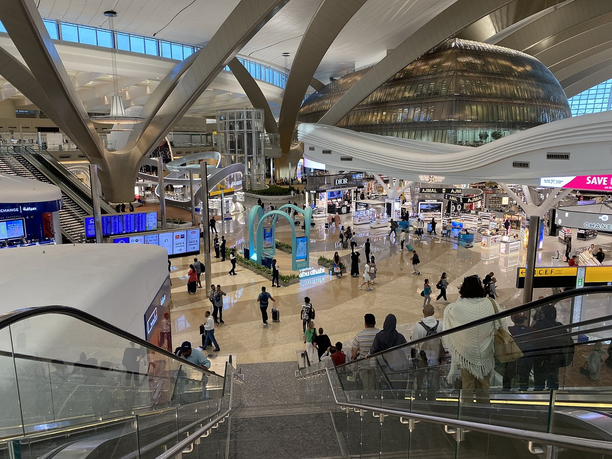
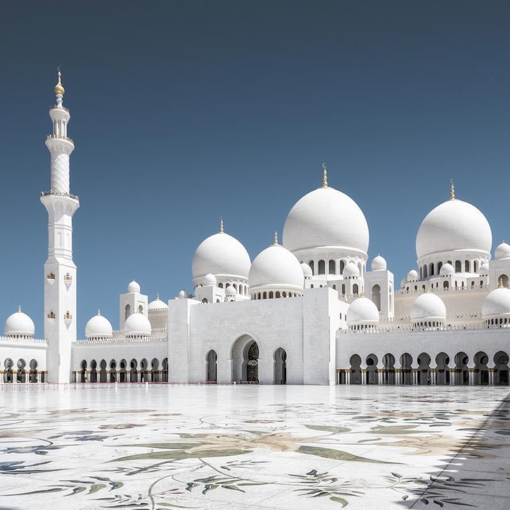
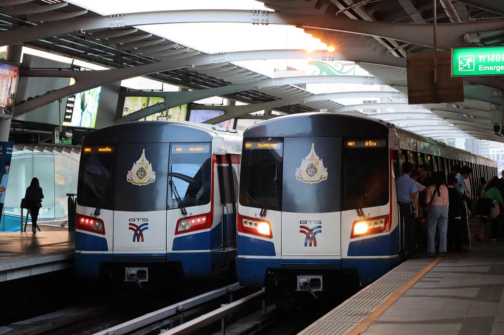
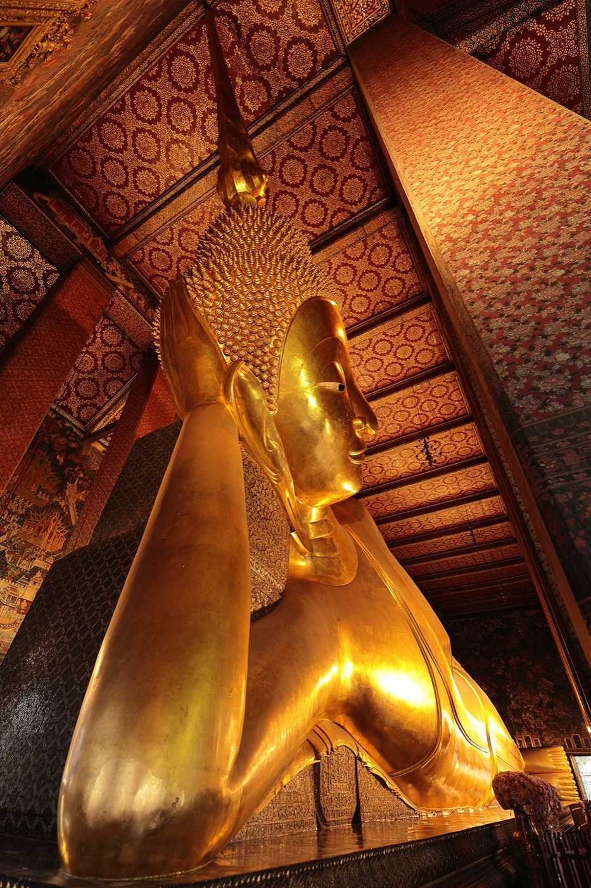
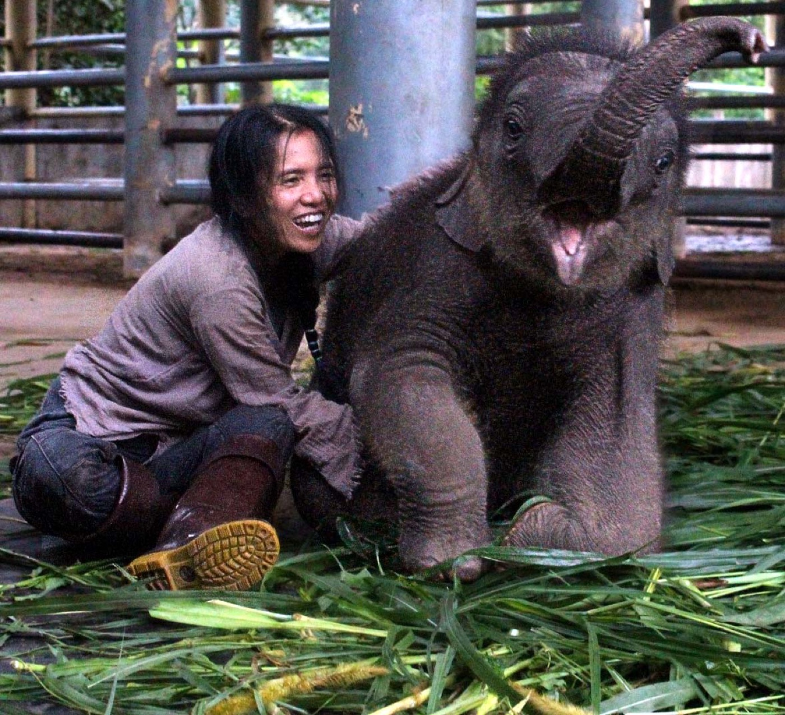
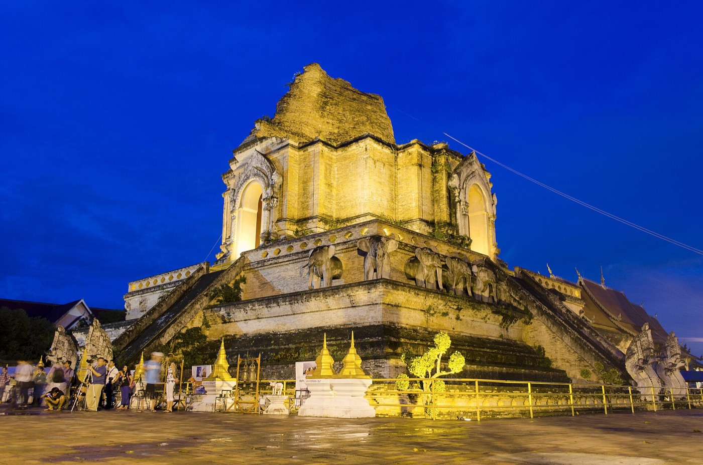

Thursday 17 — Saturday 26 September 2026 · nine days · three countries
The plan, day by day
Each day has one main thing, a rest, and a back-up if it rains or you are tired. Times are local. Prices are in dollars for the two of you unless it says “each”. Nothing here is booked yet — the cost sheet is where you choose.
Before reading the days
Days 2, 3 and 10 are in Abu Dhabi, which the US government currently rates “Level 3 — Reconsider Travel” because of the conflict with Iran. The route can be changed to avoid the Middle East entirely (United through San Francisco and Hong Kong, about $280 more, no stopover). The three choices are explained here. Everything else on this page stays the same whichever route you pick.
The shape of the trip
Days 1–3 get you across the world in two halves, with a real day in Abu Dhabi between the two long flights. Day 4 is for sleep. Day 5 is the hospital and the dentist — the reason for the trip, done and dusted by mid-afternoon. Day 6 is the big Bangkok day and Stella's birthday dinner. Day 7 finishes the dentist and moves you north. Day 8 is the elephants (or the mountain). Day 9 is a quiet morning and the long ride home. Every outdoor thing happens before 10:30 AM or after 4 PM; every midday is indoors.
Day 1 · Thursday 17 September · Atlanta
Leave home after an early dinner
Tonight: on the plane
6:00 PMLeave Marietta for the airport. 45 minutes to ATL; be at the Etihad counter 3 hours before the flight. Ride to the airport: about $60 by Uber, or a family drop-off.
6:45 PMCheck in, drop the suitcases (they are checked only to Abu Dhabi, because you are staying the night there), security. Ask for wheelchair assistance at the counter if you want it — it is free and it also skips the long walk to the gate.
9:30 PMEtihad EY 14 to Abu Dhabi. 13 hours 50 minutes. Dinner is served about an hour after take-off, then lights go down. Breakfast before landing.
On the plane: aisle seats, shoes off, a small pillow, and a walk to the back every two hours. Set your watch to Abu Dhabi time (8 hours ahead) as soon as you sit down, and try to sleep when the cabin goes dark — it will be the middle of the night where you are going.
Day 2 · Friday 18 September · Abu Dhabi
Land in the evening, sleep in a real bed
Tonight: the Etihad stopover hotel, paid for by the airline

Abu Dhabi’s Terminal A — opened in 2023. Everything is new, air-conditioned, and signposted in English.
7:20 PMLand. Passport control: a stamp at the counter, free for US passports, no forms. Ask any staff member for the assistance lane — they will take you. Collect the suitcases.
8:45 PMWalk straight out to the taxi rank at the kerb (not Uber — its pick-up point is a 10-minute walk away). Metered, card or cash. $15–27 to the hotel depending on where it is.
9:30 PMCheck in. Say “Etihad stopover” and your surname; the room is already paid. The room is yours for 24 hours from this moment — so it is also your air-conditioned nap spot tomorrow at midday. Something light to eat at the hotel, then bed.
Good to know: the hotel night is free but breakfast and the taxi are not. Your Etihad boarding pass is also an “Abu Dhabi Pass” — 15% off the museum and palace tomorrow and a free phone SIM if you want one.
Day 3 · Saturday 19 September · Abu Dhabi, then the night flight
The white mosque at nine, everything else indoors
Tonight: on the plane to Bangkok

Sheikh Zayed Grand Mosque. Be at the door at 9:00 — by 10:30 the marble is too hot to enjoy.
The one big thing: the Grand Mosque at opening time, before the heat. It is the most beautiful building either of you will have stood inside, and it is free. Long loose clothes and a headscarf for Stella; long trousers and sleeves for Cajetan. Golf-cart rides from the car park are offered to seniors — ask.
8:00 AMBreakfast at the hotel café. Drink a big glass of water each before you leave — the day will be 100–105°F.
8:45 AMTaxi to the mosque. $10–15, 10–25 min.
9:00–10:30Grand Mosque. Courtyard first (best light, before the heat), then the prayer hall. Photos allowed; not of people praying.
10:40Taxi to Qasr Al Watan, the presidential palace — gold, marble, fully air-conditioned. $10–12 taxi · $17 each entry (15% off with the boarding pass).
12:45 PMLunch at Al Mrzab — an Emirati restaurant locals eat at; dates and Arabic coffee arrive free before the meal; order lamb or chicken machboos (spiced rice, like jollof’s cousin). $14–27 each.
2:20 PMTaxi to the Louvre Abu Dhabi. Two or three hours of world art under a giant dome that lets the light through like rain. Café inside. Open until 8:30 PM, so no rush. $12–15 taxi · $15 each entry.
5:20 PMTaxi back to the hotel for the bags, then to the airport. $16–20. At Terminal A by 6:15–6:30. Camel-milk ice cream at The Majlis café inside the airport — Stella’s photo for the album.
9:10 PMEtihad EY 402 to Bangkok. 6½ hours; lands 6:45 AM Sunday.
If the heat is too much (Stella’s version): mosque 9:00–10:15 → coffee at the Souk Qaryat Al Beri 5 minutes away, with the mosque across the water → back to the hotel for lunch and a nap in the air conditioning until 2:30 → the Louvre only, slowly, 3:00–5:30 → airport. One outdoor hour, one museum, one nap. Still a real day in a new country. About $136 for two instead of $188.
Day 4 · Sunday 20 September · Bangkok
Arrive, sleep, one gentle evening
Tonight: Ad Lib Bangkok, Sukhumvit Soi 1 — one minute from the hospital

The Skytrain. Your hotel runs a free tuk-tuk to the station so there are no stairs from the street.
The one big thing: nothing. This is the jet-lag day. The plan books the hotel from Saturday night so the room is ready when you walk in at 9 AM.
6:45 AMLand at Suvarnabhumi. The arrival card was filed online before you left (see the guide). Passport control and bags take 60–90 minutes at this hour.
8:15 AMRide to the hotel. Grab (the taxi app) from Level 1, Gate 4 — or the official metered-taxi queue on the same level, which is simpler after a long night. Grab $10–14 + $2 tolls · metered taxi $15–20 all in · 35–50 minutes.
9:00 AMCheck in and sleep until 1 PM. Curtains closed, phones off.
1:15 PMLunch at Pier 21, the food court on the 5th floor of the Terminal 21 mall: spotless, air-conditioned, every dish $1–2, you buy a card at the counter and hand it to the stalls. Hotel tuk-tuk to the Skytrain, one stop to Asok. Walk the mall’s themed floors for Stella’s first photos.
3:00 PMBack to the hotel. Pool or nap.
5:30 PMOne stop on the Skytrain to Chit Lom: the Erawan Shrine (dancers, flowers, incense — five minutes) and a lap of Central World in the air conditioning.
7:00 PMDinner at Cabbages & Condoms on Soi 12 — a lantern-lit garden restaurant with printed prices and mild dishes; the profits fund a health charity. Chicken satay, chicken in pandan leaves, massaman curry. About $18 each. Reserve. Bed by 9. Last food by 7 PM if the check-up is tomorrow — water is fine.
Do not go to Chinatown or the river today, however good you feel at 4 PM. Tuesday is for that, rested.
Day 5 · Monday 21 September · Bangkok
The hospital morning and the dentist
Tonight: Ad Lib Bangkok
The one big thing: the check-ups. Bumrungrad is one minute’s walk from the hotel door. It is like Emory — big, modern, every doctor speaks English — except they do the whole check-up in one go and sit down with you the same afternoon.
6:50 AMWalk to Bumrungrad, Health Screening Center, 11th floor. Fasting since 7 PM last night. Blood draw first, then breakfast is provided, then the rest: heart tracing, chest x-ray, ultrasound, eyes, hearing, PSA for him, mammogram for her, bone density. The full “70+” version takes 6–8 hours; the basic one about 4.
2:00 PMBangkok International Dental Hospital, Sukhumvit Soi 2 — a 10-minute walk from Bumrungrad (do not take a car; the one-way streets make it a 4-km loop). X-rays, consultation, and the first visit for the crown: the tooth is prepared today and the finished crown is fitted Wednesday morning. A zirconia crown is about $680–830 all in.
4:30 PMIf there is energy: Grab to Jim Thompson House — teak houses and a shaded garden, a 60-minute guided tour, mostly flat. $8 each · Grab $3–4. If not: the pool.
6:30 PMDinner at Baan Khanitha on Soi 23 — a Thai heritage house with white tablecloths and full air conditioning; every dish can be made mild. Massaman curry, grilled river prawns, mango sticky rice with coconut ice cream. $18–31 each. Reserve. Bed by 9:30; tomorrow starts at 7:15.
If the dentist runs long or the check-up wipes you out: one sunset drink at Above Eleven (33rd-floor rooftop, a 4-minute walk from the hotel, no minimum spend, an elevator all the way up) and room service. Many Bangkok museums are closed on Mondays, which is why today is not a sightseeing day.
Day 6 · Tuesday 22 September · Bangkok
The Grand Palace, the river, and the birthday dinner
Tonight: Ad Lib Bangkok

Wat Pho, home of the 150-foot reclining Buddha. Ten minutes’ flat walk from the Grand Palace.
The one big thing: the Grand Palace at opening, then Wat Pho, then the ferry to Wat Arun — the three famous sights are within one square kilometre, so the whole day happens in one place. Dinner is booked on a rooftop facing Wat Arun as the lights come on.
7:15 AMBreakfast. Dress for temples: shoulders and knees covered, slip-on shoes (you take them off at every building), hat, small umbrella.
7:35 AMGrab to the Grand Palace, Na Phra Lan Road gate. $5–7 · 25–40 min. Anyone outside who says “the palace is closed today” is lying — walk past them to the gate.
8:30–10:30Grand Palace and the Emerald Buddha temple.$15 each. Shade breaks in the cloisters; water at every turn.
10:40Walk 10 minutes (flat) to Wat Pho and the reclining Buddha. $9 each. Then a 30-minute foot massage in the temple’s own pavilion — the original Thai massage school. $8–16 each.
12:30 PMLunch 100 m away in the air-conditioned ground floor of Supanniga (the same restaurant as tonight), or a 10-minute Grab to Krua Apsorn, where Bangkok’s civil servants eat — crab omelette, mild curries. $9–20 each.
1:45–3:45Out of the heat: Museum Siam (air-conditioned, $6 each) or a café at the Tha Maharaj pier mall. Or, if Stella is fading, Grab back to the hotel for a nap and return at 4.
4:00 PMThe cross-river ferry from Tha Tien to Wat Arun — 15 cents, three minutes. At the temple: Thai-dress portraits with the tower behind you, from $6 — Stella’s birthday photo. Ferry back at 5.
5:15 PMBirthday dinner on the Supanniga rooftop, table booked and facing Wat Arun. Sunset at 6:15, the temple lit at 7. The table has a $62 minimum for two — which is dinner. A box of mooncakes from Chinatown for the cake: the Mid-Autumn festival is this week.
7:45 PMGrab home. $5–7 · 20–30 min. Bed by 9:30.
Plan B for the evening (cheaper, louder, hotter): 4:45 Grab to Chinatown’s Yaowarat Road, dinner at T&K Seafood (grilled prawns, steamed sea bass, chairs not stools — arrive by 5 for an air-conditioned seat, $6–11 each), then the neon walk and photos under the Odeon arch. If it rains: Museum Siam and the Supanniga ground floor are both dry.
Day 7 · Wednesday 23 September · Bangkok → Chiang Mai
The crown goes on, then north
Tonight: THEE Vijit Lanna, at the Old City gate in Chiang Mai
9:00 AMDental hospital: the finished crown is fitted and checked. Collect the printed check-up report from Bumrungrad on the way back.
12:00Check out (ask for late check-out or bag storage — both are routine). Lunch at Pier 21 again, or at the hotel.
2:30 PMGrab to the airport. $13–18 + tolls · 45–70 min at this hour. Arrive by 3:45 for the 5:35 flight.
5:35 PMThai Vietjet VZ 122 to Chiang Mai, 1 h 25 min. Same airport as the big flights, no cross-town transfer.
7:00 PMLand. Walk left in the arrivals hall to the official taxi counter (a person with a clipboard): flat $5–6, 15 minutes to the hotel. Or the hotel’s own car, $11, booked the day before.
8:15 PMDinner five minutes away at the Anusarn food court by the Night Bazaar — clean, well-lit, seated, $1.50–3 a dish: khao soi (the northern coconut-curry noodle) and mango sticky rice. First lantern photos. Bed by 10.
Tonight, confirm: the elephant sanctuary pick-up time (they text the evening before) and Friday’s 11:20 car to the airport.
Day 8 · Thursday 24 September · Chiang Mai
Elephants in the morning, temples at golden hour
Tonight: THEE Vijit Lanna

Elephant Nature Park. Rescued animals, no riding, no shows — you walk beside them on a flat path and feed them.
The one big thing: Elephant Nature Park, half-day morning. Hotel pick-up at 7:30, a slow one-hour walk with the herd on a path a wheelchair could manage, a feeding platform, a big vegetarian lunch, back at the hotel by 2:15. $77 each. Closed shoes, hat, light rain jacket.
6:30 AMBreakfast (the hotel serves from 6:30 — confirm).
7:30 AMSanctuary minibus picks you up. About 90 minutes each way into the hills.
2:15 PMBack. Rest until 4:30 — pool, air conditioning, nap. This is the hour the afternoon shower usually comes anyway.
4:30 PMGrab ($2–3) to Wat Phra Singh — the gold stupa glows in low light. Walk 10 minutes along Ratchadamnoen Road to Wat Chedi Luang (the huge brick tower) and Wat Phan Tao (the teak temple). At the orange tables under the trees, young monks sit for “monk chat” until 6 — ask one what his day is like.
6:15 PMDinner at Huen Phen, 5 minutes’ walk — the classic northern-Thai house restaurant, antique-filled evening room, partly air-conditioned. Gaeng hang lay (a gentle pork curry), sai ua (herb sausage), fish steamed in banana leaf. $8–11 each. Arrive early; it fills.
8:00 PMOptional: 10-minute Grab to the Night Bazaar for 45 minutes of lanterns and a 30-minute foot massage ($6–8). Or straight to bed.
If you would rather see the mountain than the elephants: 7:00 AM Grab up to Doi Suthep (the temple on the hill above the city) before the clouds; the little cable car up the last stretch is 60 cents, so no 306 steps; back down by 10:30 and a bowl of khao soi at Khao Soi Khun Yai at 11:15 (open 10–2, $1 a bowl, the one every guide sends you to). Hotel by 12:15. About $25 for the two of you instead of $154. If it rains all afternoon: the Lanna Folklife Museum opposite the Three Kings monument, $3 each.
Day 9 · Friday 25 September · Chiang Mai → Bangkok → the night flight
A quiet morning, then the long ride home begins
Tonight: on the plane to Abu Dhabi

Wat Chedi Luang in the early morning, when the monks are out and the square is empty.
Stella’s surprise (under $5): at 6:40 AM, walk to the Three Kings monument with two small packets of rice and fruit the hotel helps you prepare, and give alms to the monks as they pass. Then Wat Chedi Luang in morning light, and light a lotus candle for a first-trip-abroad wish. Back by 9:30 for breakfast.
6:40 AMAlms at the Three Kings (or, for Cajetan, the Warorot market — open since 5 AM — for dried mango, herb sausage and a $3 scarf).
9:30 AMBreakfast, pack, late check-out at 11:30 (free in low season, usually).
11:20 AMHotel car or Grab to the airport. $3–11 · 15–20 min.
1:40 PMThai Airways TG 107 to Bangkok, lands 3:05 PM. Suitcases included on this one.
3:05 PMSix hours at Suvarnabhumi: collect the bags, check them in again with Etihad, dinner in the terminal. A paid lounge with recliners is an option ($40–50 each).
9:00 PMEtihad EY 407 to Abu Dhabi, lands 12:30 AM.
If the mountain was skipped on Thursday and the sky is clear at 6:15: Doi Suthep at dawn instead of the alms — the cable car, an hour on the terrace, back by 9:15. If the summit is in cloud, do the alms; nothing lost.
Day 10 · Saturday 26 September · Abu Dhabi → Atlanta
Six hours in a bed, then home
Tonight: your own bed in Marietta
12:30 AMLand in Abu Dhabi. The 8 hours 50 minutes here are the price of the cheap fare. The plan books the AUHotel inside Terminal A — a real room without leaving the airport, about $125 for a 6-hour block. Sleep 1:15–7:15.
9:20 AMEtihad EY 13 to Atlanta, 16 hours 10 minutes. Lands 4:30 PM the same day (you get the 8 hours back).
4:30 PMAtlanta. Passport control (see the guide for the free “Mobile Passport Control” app that skips most of the line). Home by about 6:30.
If you would rather not pay for the room: the terminal is new and quiet, with rest zones — but it is 2 AM on a chair at 70 and 71. The room is the best $125 in this plan.
What to skip, and why
“The palace is closed today.” Said by friendly men in nice shirts near the Grand Palace, followed by a cheap tuk-tuk tour that ends at a gem or tailor shop. The palace is open every day. Walk past and smile.
Tuk-tuk rides. Fun to photograph, bad to sit in: exhaust, rain, a high step, and a fare that starts at double the taxi app. One photo in a parked one, yes.
Khao San Road. A backpacker bar street. Nothing there for you.
Damnoen Saduak floating market. Two hours each way to a floating souvenir stand in boat fumes. If you want boats, the Wat Arun ferry on Tuesday is the real thing for 15 cents.
Elephant shows, tiger selfies, “long-neck villages”. Animals and people on display for money. The sanctuary on Thursday is the opposite of this.
River dinner cruises. A 200-person buffet with a cover band, boarding 40 minutes away by taxi. The rooftop table on Tuesday gives you the same view sitting still, for the same money, 100 m from where you already are.
Restaurants without printed prices, and any restaurant a taxi driver “recommends” — he is paid 30% of your bill.
The cash machine’s offer to charge you in dollars. Always choose “continue in Thai baht”. The dollar option costs 3–7% more.
Sightseeing on Sunday, however good you feel at 4 PM. Sunday is lunch, a mall and a shrine.
Where you sleep — three choices in Bangkok, two in Chiang Mai
All meet the bar: 4-star or better, rated 9 or above by other travellers, an elevator, and no surprises. The difference is the walk to the hospital.
Bangkok · Ad Lib Bangkok $75–100 a night · Booking.com 9.1
The pick, because Monday morning you walk one minute to Bumrungrad and 500 m to the dentist, and the free tuk-tuk to the Skytrain means no stairs from the street. Salt-water pool, good breakfast, spotless. Rooms are on the small side. The plan books Saturday night too, so the room is ready at 9 AM Sunday.
Bangkok · DoubleTree by Hilton Ploenchit $82–132 · Booking.com 8.8
The most “big hotel” feel for the money, large rooms, a strong breakfast, and on the same little street as the dental hospital. It misses the 9.0 bar by two tenths, and the Skytrain is a 10-minute walk in the heat (use a $2 Grab). Take it if Stella wants a grand lobby.
The best-rated hotel on the list: 5-star, 18th-floor infinity pool, quiet street. But it is 2 km from the hospitals, so every medical trip is a taxi and Monday starts at 6:30. Best hotel, worst logistics for this particular trip.
Chiang Mai · THEE Vijit Lanna about $68 a night · 4-star, elevator, two pools
One minute from the Old City gate, so the temples, Huen Phen and the Night Bazaar are all on foot. Sends a car to the airport for $11. The frugal choice that is also the practical one.
Chiang Mai · Meliá Chiang Mai from $112 · Booking.com 9.0, elevator
5-star, rooftop pool, quiet rooms (a January 2026 review calls out how quiet). Next to the Night Bazaar, a 10-minute taxi from the Old City temples. The comfortable upgrade.
Abu Dhabi · the free Etihad stopover hotel $0 + about $14 in fees
You pick from the airline’s list on the day you buy the tickets. Ask for Aloft Abu Dhabi (modern, rooftop pool, elevators everywhere) or City Seasons. If only basic hotels show, pay about $99 for Khalidiya Palace Rayhaan (Booking.com 9.0, on the beach) or $79 for Novotel Abu Dhabi Gate (next to the mosque).
The restaurant list
Every one has printed prices, chairs with backs, and cooks who hear “mai phet” (not spicy) all day. Prices are per person.
Where
Place
Why
Price
Abu Dhabi
Al Mrzab, Airport Road
Emirati home cooking; dates and coffee free; machboos rice, lamb. Michelin-listed, locals’ place.
$14–27
Bangkok, near hotel
Pier 21, Terminal 21 mall
The clean $2 food court. First meal, and any time you want easy.
$1–2 a plate
Bangkok, near hotel
Cabbages & Condoms, Soi 12
Garden, lanterns, mild plates, printed prices, a charity story.
$18
Bangkok, near hotel
Baan Khanitha, Soi 23
White-tablecloth Thai in a heritage house, full AC. Massaman, river prawns.
$18–31
Bangkok, near hotel
Above Eleven, Soi 11 rooftop
Sunset skyline drink, no minimum, elevator to the roof.
$11–15 a drink
Bangkok, Old City
Supanniga Eating Room, Tha Tien
Facing Wat Arun; AC downstairs for lunch, rooftop for the birthday. Crab omelette, mild red curry.
$18–22 · rooftop $62 min per table
Bangkok, Old City
Krua Apsorn, Dinso Road
Where civil servants lunch. Crab omelette, mild curries. Closed Sunday; open Tuesday.
$9–15
Bangkok, Chinatown
T&K Seafood, Yaowarat
The famous grill on the corner. Prawns, steamed sea bass. Arrive by 5 for an AC seat. Closed Monday.
$6–11
Chiang Mai
Anusarn food court, Night Bazaar
Clean, lit, seated. Khao soi and mango sticky rice on arrival night.
$1.50–3 a dish
Chiang Mai
Huen Phen, Old City
The northern-Thai house. Gentle pork curry, herb sausage. Evening room 5–10 PM.
$8–11
Chiang Mai
Khao Soi Khun Yai, Old City
The bowl every guide sends you to. Open 10–2 only; ask for it plain.
$1
Chiang Mai
Kao Soy Nimman, Nimman Road
The one khao soi place with air conditioning and dinner hours.
$3–6
Chiang Mai
Deck 1, riverside
Quiet, modern, on the river. The one nicer dinner if the budget allows.
$23
Book by these dates
As soon as the dentist confirms the procedure: the Etihad tickets on etihad.com (not through another website), choosing the “Value” fare so suitcases are included, and adding the Abu Dhabi stopover the same day. Prices move daily; today $1,921 + about $280 for the bag fare.
The same day as the tickets: travel insurance (so pre-existing conditions are covered) and the free stopover hotel on etihad.com/stopover with the booking reference.
By 8 September: the Supanniga rooftop table for Tuesday 22 at 5:15 PM (tables go a month out; $15 deposit) — supannigaeatingroom.com.
By 8 September: Elephant Nature Park half-day morning for Thursday 24 — elephantnaturepark.org (sells out).
By 12 September: the check-ups. Bumrungrad “Holistic 70+” at bumrungrad.com/en/book-appointment for Monday 21, 7:00 AM; or Bangkok Hospital “Longevity 60+”, which needs 7 days’ notice.
Now: email the dental hospital (contact@dentalhospitalthailand.com) with the US dentist’s plan and x-rays for a written price, and ask for Monday 21 at 2 PM and Wednesday 23 at 9 AM.
Two to three weeks out: hotels on Booking.com with free cancellation — Ad Lib from Saturday 19 (so the room is ready Sunday morning), THEE Vijit Lanna 23–25; Baan Khanitha and Cabbages & Condoms tables; the AUHotel 6-hour room for the 26th.
17–19 September: the Thailand Digital Arrival Card online for both, free, at tdac.immigration.go.th.